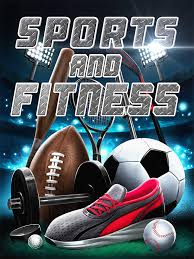
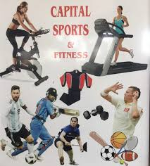
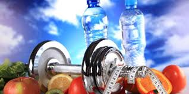
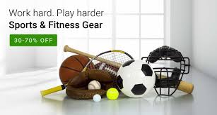

POSITIVE SIDES OF SPORTS
When we think of the benefits of sports, physical benefits are usually the most obvious.
Children who participate in sports and other rigorous physical activities (such as dance or gymnastics)
are less likely to be overweight and have a lower risk for conditions such as diabetes and cancer.
Furthermore, children who practice sports are more resilient to physical injuries during other activities.
This trend even continues into adulthood, as people who were active as children are more likely to continue
participating in physical activities as adults. By increasing activity, children learn healthy habits they can
carry into adulthood.
Many people think that a physical education class can be sufficient for most children, but this isn’t always the
case. The Physical Activity Guidelines for Americans recommends children get at least 60 minutes of rigorous exercise
every day. However, many physical education classes only meet a few times a week, and a large number of schools are
cutting back on physical education to meet budget crunches. A PE class might also be less rigorous than an after-school
or community sport league, which means children are getting less exercise less frequently. PE classes can also make physical
activity seem like an unenjoyable chore, making it less likely that children will want to keep active in the future. On the
other hand, if a child chooses a sport they really like, such as basketball or dancing, there’s a better chance they’ll stay
engaged – even into adulthood.
Of course, for children to get as many benefits as possible, it’s crucial that parents, coaches, and other adults remember to
keep sports activities fun. Pushing children to do too much too frequently, or stressing winning at all costs, increases injury
risks and can make children dislike physical activities altogether. If children are in these kinds of environments, they also miss
out on practicing the beneficial skills they can learn in sports, such as sportsmanship and teamwork. It’s a good idea to remember
that children are still growing and learning — those should be the most important parts of physical activity.

Mental Benefits
Children who participate in physical activities also gain mental benefits as they age. As children practice sports, they learn about
setting and working toward goals, dealing with disappointments, and seeing a project through. While most adult situations are more
complicated than those on sports teams, children are able to practice perseverance, planning, and even failure with smaller consequences.
This teaches children to cope with difficulties before these difficulties become too large to overcome.
Research has shown that children who participate in regular exercise experience less severe symptoms of conditions such as depression,
anxiety, and attention-deficit/hyperactivity disorder. Physical activity helps children remain focused in other tasks, which can help
with academic success. Encouraging sports as children also teaches healthier coping skills for later stressors. Later in life, these
children might blow off steam by going for a run instead of overeating or using drugs and alcohol.
Physical activity can also influence how a child feels about his or her body. As children grow, they can feel negatively toward their
body and how they look. This is especially true when puberty hits, as children become more aware of how their bodies are changing and
how they might look. Physical activity helps by emphasizing what bodies do instead of how they look. By engaging in physical activities,
children learn their bodies can accomplish a lot, which improves self-esteem and makes them more likely to take care of their bodies.

Social Benefits
Many sports activities include social interactions with teammates. In working with a team, children practice adult skills such as working
with others, adhering to a system, and respecting authorities. Working together allows children to bond over shared experiences and feel
proud of accomplishments. Being involved with sports allows children to learn and develop leadership skills that carry over to careers in
many fields. Children in sports are also less likely to experiment with drugs and unsafe sex than children not involved in any activities.
This creates a healthier foundation for adult life choices. Physical activities also allow participants to meet other people and foster
friendships they can carry beyond the activity itself. These additional people in children’s lives also give children more sources of support
in the event of issues such as abuse or troubles at home.

Encouraging Physical Activity
Getting children more involved in physical activity can be as involved as a travel league or as simple as a nightly family walk. The key to
increasing activity is to find something enjoyable, consistent, and appropriate for a child’s abilities. For example, toddlers might benefit
from games of tag, while teenagers can walk or bike to school. Getting the whole family involved also teaches your children that physical
activity is important, which makes them more likely to carry these habits into adulthood. It can be especially helpful to do family activities
that are not the child’s main sport, such as swimming or yoga. Not only do you get to have fun as a family, the child gets to expand their horizons
in terms of activity.
As children age and develop, they learn skills they can take into adulthood. They learn physical skills that increase their health and decrease the
risks of physical conditions. Physical activities allow children to practice teamwork, leadership, and perseverance in ways they can apply to grown-up
situations. Being physical can give children a chance to soak in accomplishments and feel good about themselves as they age. Working with teammates, coaches,
and others helps children practice working with authority and within systems. Children in sports also get to practice mental and social skills that will benefit
them throughout their lives, even after they have stopped playing sports.